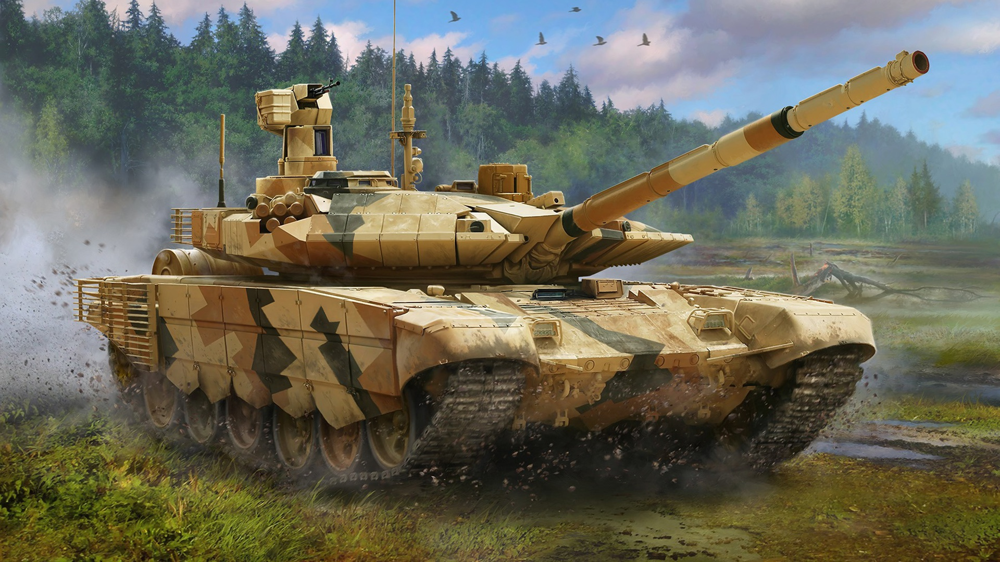
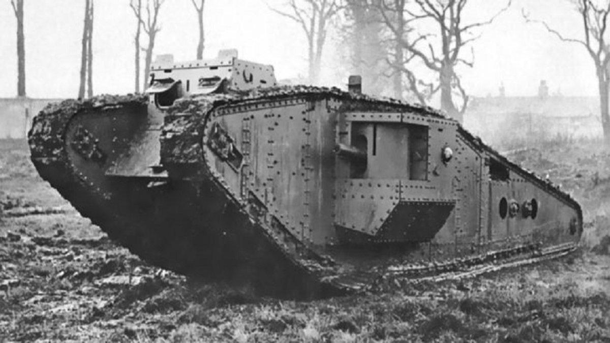
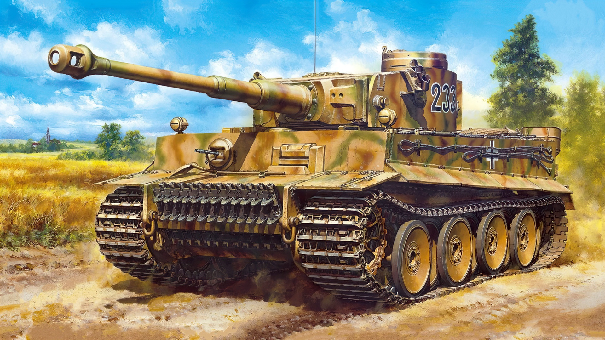
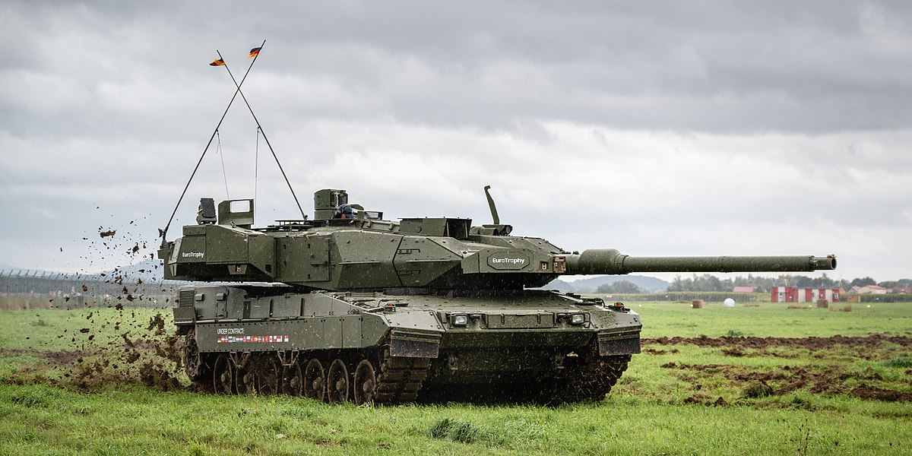
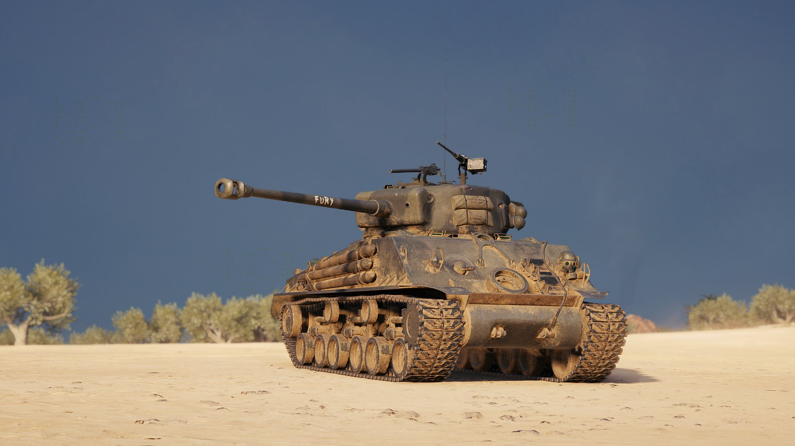
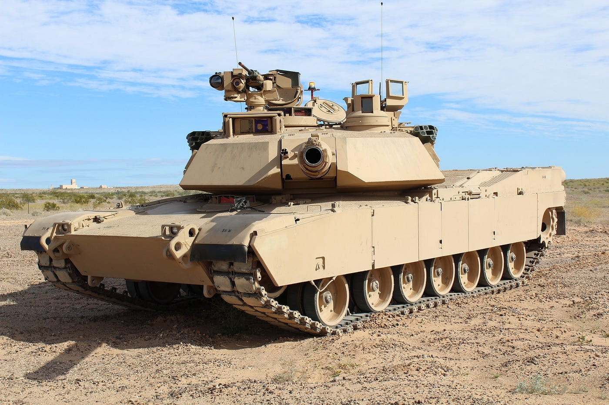
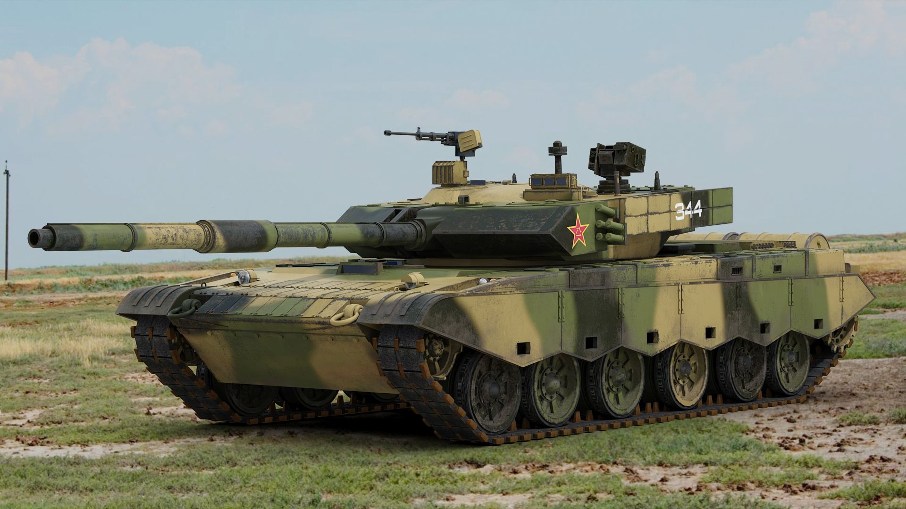

Tanque T-90 Ruso
El T-90 es un carro de combate ruso de cuarta generación, utilizado principalmente por las Fuerzas Terrestres de Rusia, además de otros países. La India comenzó a fabricar su propio modelo con asesoría de Rusia en la variante conocida como el T-90 Bhishma para el periodo 2006-2007.

Mark I
El Mark I fue un vehículo sobre orugas desarrollado por el Ejército Británico durante la Primera Guerra Mundial y el primer tanque del mundo.
Diseñado: 1915 // Arma primaria: 2 × cañones Hotchkiss QF de 6 libras // Arma secundaria: 4 × ametralladoras Hotchkiss

Panzerkampfwagen VI
El Tiger I, cuya designación oficial era Panzer VI Tiger, fue un tanque pesado alemán desarrollado en 1941 y usado en la Segunda Guerra Mundial hasta la aparición del Tiger II..
Diseñador Henschel & Sohn // Fabricante Henschel // Peso 57,8 t en orden de combate // Longitud 6,29 m (chasis) 8,45 m (incluyendo cañón)

Leopard 2
El Leopard 2 es un carro de combate principal desarrollado en Alemania a comienzos de la década de 1970 por Krauss-Maffei-Wegmann. Entró en servicio por primera vez en 1979, reemplazando al Leopard 1 en su función de carro de combate principal en el Ejército Alemán...
Altura: 2,64 metros (104 plg) (3 m con periscopio) // Anchura: 3,74 metros (147 plg) // Autonomía: 550 kilómetros (342 mi) // Capacidad de combustible: 1200 litros

M4 Sherman
El M4 Sherman, oficialmente Medium Tank, M4, fue el tanque medio más utilizado por los Estados Unidos y los aliados occidentales en la Segunda Guerra Mundial. El M4 Sherman demostró ser confiable, relativamente barato de producir y disponible en grandes cantidades.
Altura: 2,74-2,97 m según la variante // Blindaje: 12,7 mm mínimo hasta un máximo de 177,7 // Diseñador: Departamento de Artillería del Ejército de Estados Unidos

M1 Abrams
El M1 Abrams es un tanque de combate principal producido en Estados Unidos por General Dynamics. Constituye el principal medio blindado del Ejército estadounidense, de su Cuerpo de Marines y de los ejércitos de Egipto, Kuwait, Arabia Saudí y Australia. ..
Altura: 2,43 m Anchura: 3,47 m (sin faldones); 3,66 m (con faldones) // Anchura: 3,74 metros (147 plg) // Autonomía: 550 kilómetros (342 mi) // Capacidad de combustible: 1200 litros

Tipo 99
El Tipo 99, también es conocido como ZTZ-99 y WZ-123, desarrollo del Tipo 98G, es un carro de combate de tercera generación usado por el Ejército Popular de Liberación de China. Hecho para competir con los modernos carros de combate occidentales .
Motor: Diésel; 1500 hp (1100 kW) // Fabricante: Norinco // Blindaje: Compuesto, 1000 mm equivalentes